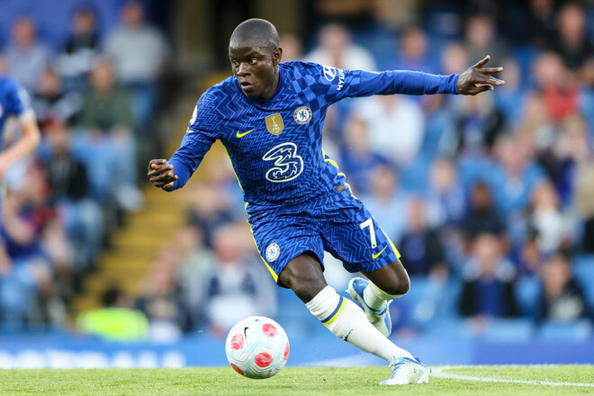

Новини тижня
-
Динамо треба продавати Циганкова. Лідера є кому замінити
Оглядач Sport.ua вважає, що Ігорю Суркісу не потрібно тягнути з продажем вінгера
Ні для кого не секрет, що Віктор Циганков – головний кандидат на перехід із «Динамо» влітку 2022 року. Кияни завдяки продажу свого лідера останніх сезонів можуть серйозно поповнити власні фінансові запаси, щоб прожити воєнні часи, а Циганков у свої майже 25 років отримає шанс зробити кар’єру у зарубіжному чемпіонаті.
Враховуючи, що Ігор Суркіс навряд чи робитиме великий розпродаж гравців влітку. Все ж, треба буде грати кваліфікацію Ліги чемпіонів та, як мінімум, групу Ліги Європи. Та й чемпіонат України, скоріше за все, відбудеться, хоча й незрозуміло, в якому форматі і в якій країні гратимуться матчі.
Продаж Миколи Шапаренка, який має серйозне значення для побудови гри команди в середині поля, зараз виглядає недоречним. З ним та без нього «Динамо» – це зовсім різні команди.
Ілля Забарний, який провів два сезони в Лізі чемпіонів, та був основним на Євро-2020, звичайно, привабливий актив для продажу, однак у його випадку Ігор Суркіс, скоріше за все, не буде поспішати, очікуючи на пропозицію, від якої важко буде відмовитися. У випадку із Забарним це має бути сума в 25+ мільйонів євро. Георгій Бущан? Навряд чи «Динамо» зможе отримати великі гроші за свого голкіпера. Та й особливих пропозицій по ньому останнім часом не надходило. Тому із кандидатів на продаж залишається лише Віктор Циганков.
Посилання на оригінальну новину -
Лейкерс не віддаватимуть активи в обмін на Вестбрука
Клуб готовий залишити гравця у своєму складі
«Лос-Анджелес Лейкерс» наступного літа спробують обміняти свого захисника Расселла Вестбрука.
Як повідомляє інсайдер Марка Стайн, клуб дає зрозуміти іншим командам, які можуть бути зацікавлені у придбанні баскетболіста, що не включатимуть до угоди додаткові активи.
«Лейкерс»не звертають увагу на скептиків і наполягають на тому, що швидше залишать Расселла Вестбрука у складі наступного сезону, ніж віддадуть додаткові активи, щоб переконати якийсь інший клуб виміняти його.
Також кажуть, що «Лейкерс» не мають наміру відпускати колишнього MVP і заплатять йому 47,1 мільйона доларів за наступний сезон після того, як він скористається опцією.
Посилання на оригінальну новину -
Реал і Монако продовжують переговори стосовно переходу Тчуамені
Мадридський клуб упевнений, що вдасться домовитися про трансфер
«Реал» та «Монако» найближчим часом проведуть черговий раунд переговорів з приводу трансферу хавбека Орельєна Тчуамені.
Як повідомляє інсайдер Фабріціо Романо, у мадридському клубі впевнені, що їм вдасться купити 22-річного француза.
«Монако» продасть гравця мінімум за 80 млн євро.
Також Тчуамені цікавиться.
Посилання на оригінальну новину -
Челсі влітку може втратити Канте
Ситуація із новим контрактом півзахисника невизначена
Один із лідерів «Челсі» Нголо Канте найближчим часом може залишити Лондон.
Як повідомляє англійська преса, протягом кількох місяців із представниками француза велися переговори про новий контракт, але жодної конкретики не було.
Чинна угода Канте з «Челсі» завершується 30 червня 2023 року.
Футболіста хочуть купити «Манчестер Юнайтед» і ПСЖ. Сам футболист непроти залишитися в «Челсі» і прагне продовжити контракт.
Посилання на оригінальну новину -
Челсі влітку може втратити Канте
Ситуація із новим контрактом півзахисника невизначена
Екс-чемпіон світу в надважкій вазі Ентоні Джошуа (24-2, 22 КО) визначився з головним тренером.
До проти володаря титулів WBA, WBO, IBF Олександра Усика (19-0, 13 КО) британця готуватиме відомий американський фахівець Роберт Гарсія.
Нагадаємо, бій має відбутися 23 липня у Саудівській Аравії.
У першому бою Джошуа працював із Робертом Маккрекеном. Після поразки від Усика британець вирушив у турне залами Америки, придивляючись до тамтешніх коучів - Едді Рейносо, Ронні Шілдсу і Вірджилу Хантеру. Побував у тому числі й у залі Гарсії.
Посилання на оригінальну новину